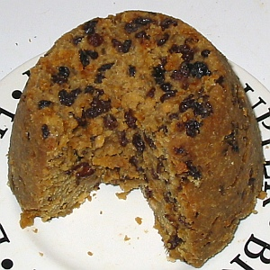
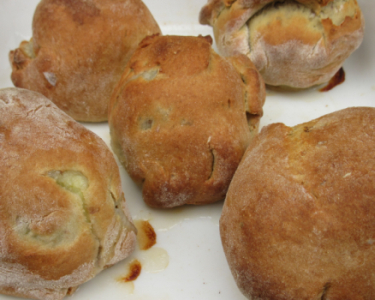

Chein qu' nou mangeait à Noué aut'fais, contre la fin du drein siècl'ye et d'vant ch'la, ofûche, n'était pon hardi difféthent dé ch'qué nou mange acouo d'nouos jours. Mais cèrtaines choses, quand même, tchi s'mangent à ch't heu n'étaient pon connues en Jèrri y'a deux ou trais généthâtions, étant d'tchi întroduit d'Angliétèrre.

Lé grand r'pas lé Jour dé Noué (lé dînner) s'faîthait pûtôt atout eune rouelle dé boeu, ou du lard au fou - lé quétot ayant 'té bigorgi la s'maine dé d'vant. Ou bein étout, des cotchets, un pithot, ou du cannard ou picot. Nou soulait mangi du pithot étout, dgia, à la St. Miché l'temps pâssé. Comme lédgeunmes y'avait des cârottes et sustout des pânnais. Car la pânnais Jèrriaise était crue en grand's quantités ichîn et 'tait r'nommée hors l'île étout. Et pis y'avait l'podîn d'flieu (podîn bouoilli) et du podîn d'riz tch'a 'té connu dans l'île pouor bein longtemps. Car les naviguants Jèrriais en ram'naient en Jèrri dépis bein des généthâtions. Lé podîn d'Noué qué nou connaît d'nouos jours né s'faîthait pon du tout aut'fais, ch'la étant d'originne Angliaîche.
Pouor lé r'pas du sé nou r'avait d'la viande, du lard, d'la volaille, mais fraid chutte fais, et p't-être étout du houard, et ofûche des crétons. Auprès ch'la nou-s-avait du pâté d'pommes et des bourdélots, et pis bein seux d'la fanmeuse gâche dé pâte. Souvent, étout, y'avait des pommes au fou, mais janmais d'chutte gâche dé Noué chucrée qué nou connaît d'nouos jours.

Eh bein, tout ch'la s'trouvait sus tabl'ye à Noué et à l'entou d'Noué - tout d'tchi fanmeux et sain et bein satisfaîthant. N'y'avait pon d'chucrinn'nies, mais tréjous du fruit - toutes sortes d'pommes (Jèrriaises et bein connues, sans doute) et dé ches paithes si r'nommées, des paithes dé Chaûmonté, et d'aut' sortes. Y'avait étout des figues et des raisîns, des châtaines, des nouaix, des cordrettes et d's almandes. Quant à la bouaisson y'en avait à gogo, mais sustout du cidre tout frais fait.
La tchuituthe dé toute chutte mangeaille sé faîthait duthant plusieurs jours dévant Noué, mais nou r'caûffait l'grand fou à l'exprès pouor lé grand r'pas lé jour dé Noué. La boulangu'thie d'pain, dé gâche, et cétéra avait ieu lieu d'vant ch'la, comme dé raison, comme v'là tchi s'faîthait châque sémaine.
Y'en avait, don, d'la fricot'tie, dans les travèrs dé Noué, et d'la baithie....! Mais, tant qu'à ch'la, il est tout probabl'ye qué les choses n'ont pon changi hardi pouor lé mus dépis ches vièrs temps.
K. Le Maistre
Viyiz étout: